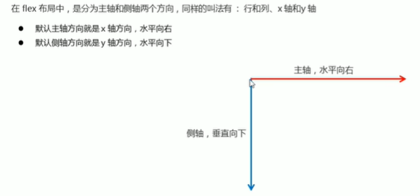
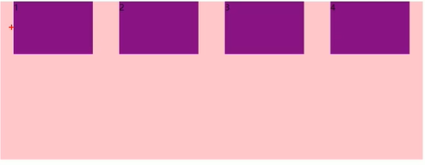
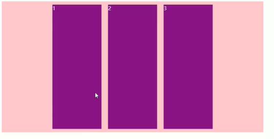
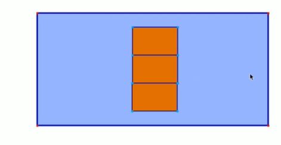
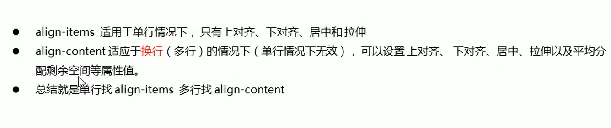
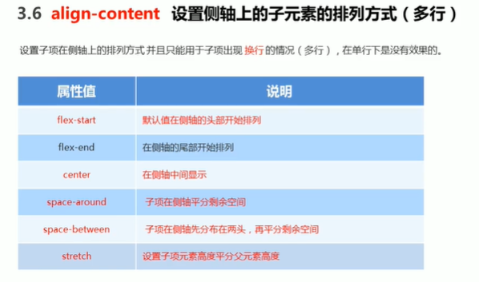
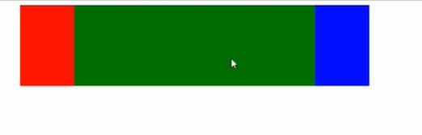
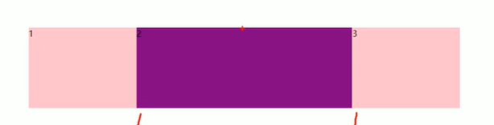
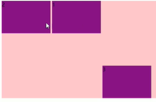

Flex布局学习
十一月 30, 2020
Flex布局学习
1.flex优点
- 移动端应用广泛
- PC端支持情况较差
- 操作布局方便
- 如果是PC端还是用传统布局，不考虑PC端兼容用flex弹性布局
2.布局原理
设置父盒子为flex后，子元素的float，clear，vertical-align属性将失效
采用flex后，父亲叫flex容器，孩子叫flex项目，子元素可以横向排列也可以纵向排列
3.父项属性
1.flex-direction ：设置主轴方向

以上为默认情况，元素跟着主轴排列
要竖着排列元素，把主轴设置为Y轴
1 | flex-direction:column |
2.justif-content 设置主轴上的子元素排列方式
1 | justif-content:flex-end 从尾部开始 |

justif-content:space-around 演示
重点space-between ::star:
3.flex-wrap设置子元素是否换行
默认情况，项目都排在一条线上，默认不换行
1 | flex-wrap:nowrap(默认) |
4.align-items设置侧轴上的子元素排列方式
1 | align-items:flex-start(default) |

若主轴是Y轴则以下方式居中

5.align-content只适用于换行（多行）的情况下
align-content和align-items的区别


between是上下贴顶，剩下随机分配
6.flex-flow是flex-direction和flex-flow的简写
flex-flow：row wrap;
子项属性
1.flex属性
flex属性定义子项目分配剩余空间，用flex来表示占多少分，注意是剩余空间

红蓝宽度设置好，绿色部分flex设置为1，自动填充
若不设置宽度同一给样式，则会平均分配
1 | flex:1; |
若是1:2:1的话，中间会占两份

什么是剩余空间，你的宽度没有设置的都算剩余空间，
2.align-self
align-self可以控制子项在侧轴上排列的方式，自我脱节，控制哪个不合群
3.order
order属性定义项目的排列顺序
数值越小越靠前，默认为0，调-1就可以调到前面去了

查看评论